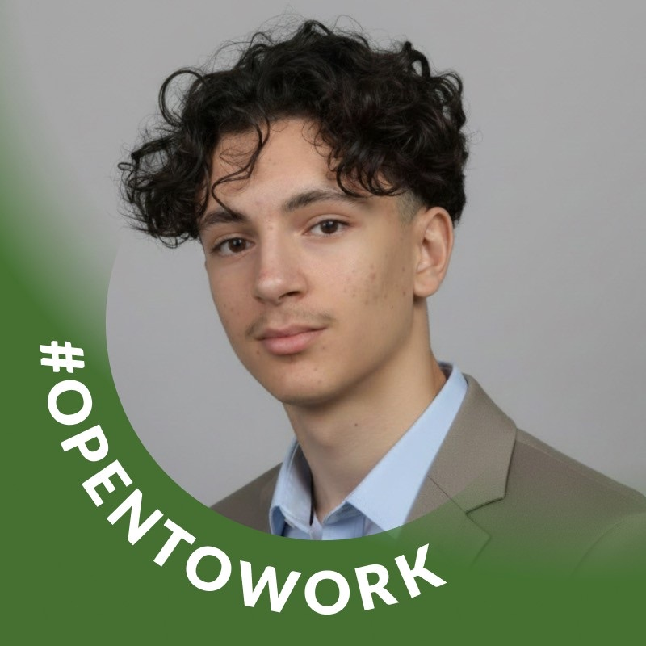

Direction technique · HTML/CSS/JS
Nassim Lahouel
Coordination du projet, architecture du site, intégration principale et cohérence de l'expérience utilisateur.
Nous avons imaginé ce prototype comme une réponse professionnelle à un appel d'offres culturel : un site immersif, accessible et international pour promouvoir la Grande Muraille de Chine, rendre sa culture plus lisible et transformer la visite en parcours numérique.
Votre avis nous aide à améliorer la navigation, les contenus, l'accessibilité et la qualité générale de l'expérience.
Quatre rôles complémentaires structurent le prototype : direction technique, cohérence culturelle, interactions et finition responsive.Four complementary roles structure the prototype: technical direction, cultural consistency, interactions and responsive finishing.

Coordination du projet, architecture du site, intégration principale et cohérence de l'expérience utilisateur.
Vérification culturelle, précision des contenus historiques et contribution à la structure éditoriale du site.
Développement des interactions, amélioration des composants dynamiques et fluidité des parcours.
Optimisation des interfaces, ajustements visuels et stabilité responsive des composants interactifs.
Un soutien permettrait d'améliorer l'hébergement, d'ajouter de vraies API touristiques, d'enrichir les contenus historiques vérifiés et de maintenir les modules d'accessibilité.
Un soutien permettrait d'améliorer l'hébergement, d'ajouter de vraies API touristiques, d'enrichir les contenus multimédias et de maintenir les modules d'accessibilité.
Le formulaire utilise Formspree et transmet le message à l'adresse de contact du projet. Pour améliorer le site en autonomie, vous pouvez aussi recenser l’expérience utilisateur.